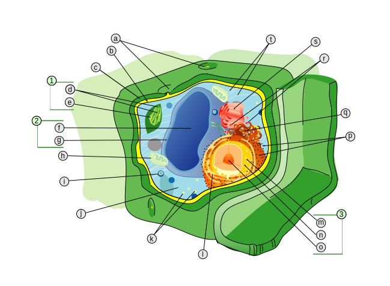
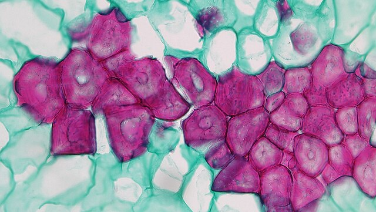

| Pared celular |
Protoplasma
|
|
|---|---|---|
| Núcleo | Citoplasma | |
| Lámina media | Envoltura nuclear | Membrana plasmática (límite exterior del citoplasma) |
| Pared primaria | Nucleoplasma | Citosol |
| Pared secundaria | Cromatina | Orgánulos rodeados por dos membranas: plástidos y mitocondrias |
| Plasmodesmata | Nucleolo | Orgánulos rodeados por una membrana: peroxisoma, vacuolas rodeadas por tonoplasto |
| Sistema de endomembranas (componentes principales): retículo endoplásmico, aparato de Golgi y vesículas1 | ||
| Citoesqueleto: microtúbulos y filamentos de actina | ||
| Ribosomas | ||
| Cuerpos oleosos | ||
| 1 El sistema de endomembranas también incluye la membrana plasmática, la envoltura nuclear, el tonoplasto y todas las demás membranas internas, a excepción de las membranas mitocondrial, plastidial y peroxisomal. | ||
Citología
Células
Cuando se estudian a nivel celular, incluso los organismos más diversos son notablemente similares entre sí, tanto en su organización física como en sus propiedades bioquímicas. Evert & Eichhorn (2013).


Teoría celular
- Todos los organismos vivos están compuestos por una o más células.
- Las reacciones químicas de un organismo vivo, incluidos sus procesos de liberación de energía y sus reacciones biosintéticas, tienen lugar dentro de las células.
- Las células surgen de otras células.
- Las células contienen la información hereditaria de los organismos de los que forman parte, y esta información se transmite de célula madre a célula hija.

Célula animal vs Célula vegetal


Célula vegetal: tamaños

Fig 7: Representación pictórica de varias estructuras vegetales y sus tamaños. Crang et al. (2018).
Protoplasto
El término «protoplasto» deriva de la palabra protoplasma, que se utiliza para referirse al contenido de las células. Un protoplasto es la unidad de protoplasma dentro de la pared celular. Un protoplasto consta de citoplasma y núcleo. Evert & Eichhorn (2013).
[Antes] se pensaba que el protoplasma era una sustancia distinta, como el agua, el oxígeno o el hierro, y que una de sus propiedades era la vida misma. Ahora sabemos que el protoplasma es una masa de proteínas, lípidos, ácidos nucleicos y agua dentro de una célula; salvo la pared, todo en la célula es protoplasma. Mauseth (2016).

Citoplasma
El citoplasma incluye entidades distintas, delimitadas por membranas (orgánulos como plástidos y mitocondrias), sistemas de membranas (el retículo endoplásmico y el aparato de Golgi) y entidades no membranosas (como ribosomas, filamentos de actina y microtúbulos).
El resto del citoplasma -la «sopa celular» o matriz citoplasmática, en la que están suspendidos el núcleo, diversas entidades y sistemas de membranas- se denomina citosol. El citoplasma está rodeado por una única membrana, la membrana plasmática.
Los orgánulos y diversas sustancias suspendidas en el citosol, son arrastrados de forma ordenada por las corrientes en movimiento. Este movimiento se conoce como flujo citoplasmático o ciclosis y continúa mientras la célula está viva. El flujo citoplasmático facilita el transporte de materiales dentro de la célula y entre la célula y su entorno.

Plástidos
Plastidio, término general que agrupa a todos los orgánulos vegetales que fabrican o almacenan nutrientes o pigmentos. Nabors (2006).
Junto con las vacuolas y las paredes celulares, los plástidos son componentes característicos de las células vegetales y se ocupan de procesos como la fotosíntesis y el almacenamiento. Los plástido se diferencia en un sistema de membranas formado por sacos aplanados llamados tilacoides y una matriz más o menos homogénea, llamada estroma. Evert & Eichhorn (2013).

| Plástidos | Función |
|---|---|
| Amiloplastos | Almacenan almidón; se consideran leucoplastos |
| Cloroplastos | Realizan la fotosíntesis |
| Cromoplastos | Contienen abundantes lípidos coloreados; en flores y frutos |
| Etioplastos | Etapa específica en la transformación de proplastos en cloroplastos; se producen cuando los tejidos se cultivan sin luz |
| Leucoplastos | Plastidios incoloros; sintetizan lípidos y otros materiales |
| Proplástidos | Plastidios pequeños e indiferenciados |

Leucoplastos
Estructuralmente el menos diferenciado de los plastos maduros, carecen de pigmentos y de un elaborado sistema de membranas internas. Evert & Eichhorn (2013).
«Leucoplasto» es un término puramente descriptivo: cualquier plastidios incoloro, incluidos los proplastos y los amiloplastos, pueden considerarse leucoplastos. Mauseth (2016).

Aparato de Golgi
El término aparato de Golgi, o complejo de Golgi, se utiliza para referirse colectivamente a todos los cuerpos de Golgi (también llamados cuerpos de Golgi o dictiosomas) de una célula. Evert & Eichhorn (2013).
El aparato de Golgi está formado por varios sacos independientes de cisternas que tienen su origen en las membranas que se producen en el RE. Al contrario que las cisternas del RE, las cisternas del cuerpo de Golgi no están conectadas entre sí. La cara del cuerpo de Golgi más cercana al RE (cis) recibe de éste las vesículas de transporte. Las nuevas vesículas de transporte se forman en la cara del cuerpo de Golgi más alejada del RE (trans). Nabors (2006).
En las plantas, la mayoría de los cuerpos de Golgi participan en la síntesis y secreción de polisacáridos no celulósicos (hemicelulosas y pectinas) destinados a incorporarse a la pared celular. Evert & Eichhorn (2013).

Citoesqueleto
Todas las células eucariotas poseen un citoesqueleto, una red dinámica tridimensional de filamentos proteicos que se extiende por todo el citosol y está íntimamente implicada en muchos procesos.
El citoesqueleto de las células vegetales está formado por dos tipos de filamentos proteicos: los microtúbulos y los microfilamentos. Además, pueden contener un tercer tipo de filamento citoesquelético, los filamentos intermedios.

Pared celular: composición
Las paredes de las células vegetales están compuestas fundamentalmente por celulosa. La mayoría de las moléculas de celulosa se disponen unas al lado de otras formando microfibrillas cilíndricas (10 a 25 nm de diámetro). Las moléculas de celulosa de las microfibrillas están conectadas por algunas partes formando subunidades cristalinas llamadas micelas. Estas uniones se producen mediante dos tipos de proteínas: las pectinas, de aspecto gelatinoso, y las hemicelulosas, que son carbohidratos de apariencia viscosa. Nabors (2006).
Otro componente importante de las paredes de muchos tipos de células es la lignina, que añade resistencia a la compresión y rigidez a la flexión (rigidez) a la pared celular. Suele encontrarse en las paredes de las células vegetales que tienen una función mecánica o de soporte. La cutina, la suberina y las ceras son sustancias grasas que suelen encontrarse en las paredes de los tejidos exteriores y protectores del cuerpo vegetal. Evert & Eichhorn (2013).

Pared célular secundaria
La formación de la pared secundaria se produce sobre todo después de que la célula haya dejado de crecer y la pared primaria ya no aumente su superficie.
La celulosa es más abundante en las paredes secundarias que en las primarias, y pueden faltar las pectinas; la pared secundaria es, por tanto, rígida y no se estira fácilmente.
Con frecuencia, en una pared secundaria pueden distinguirse tres capas distintas, denominadas S1 , S2 y S3 , para la capa externa, media e interna, respectivamente.


Pared célular: plasmodesmos
Poros diminutos en la pared celular primaria a través de los cuales las membranas atraviesan las células, permitiendo el intercambio de compuestos entre células. Simpson (2019)
Los plasmodesmos pueden estar repartidos por toda la pared celular o agrupados en campos de punteaduras primarias o en las membranas entre pares de punteaduras. Evert & Eichhorn (2013).
Cada plasmodesmo está rodeado de una membrana plasmática y suele presentar una conexión intercelular denominada desmo- túbulo. Nabors (2006).


{kind=link}
{kind=link}
{kind=link}
{kind=link}
{kind=link}
{kind=link}
.jpg){kind=link}
-es.svg){kind=link}
{kind=link}
{kind=link}
{kind=link}
-es.svg){kind=link}
{kind=link}
{kind=link}
{kind=link}